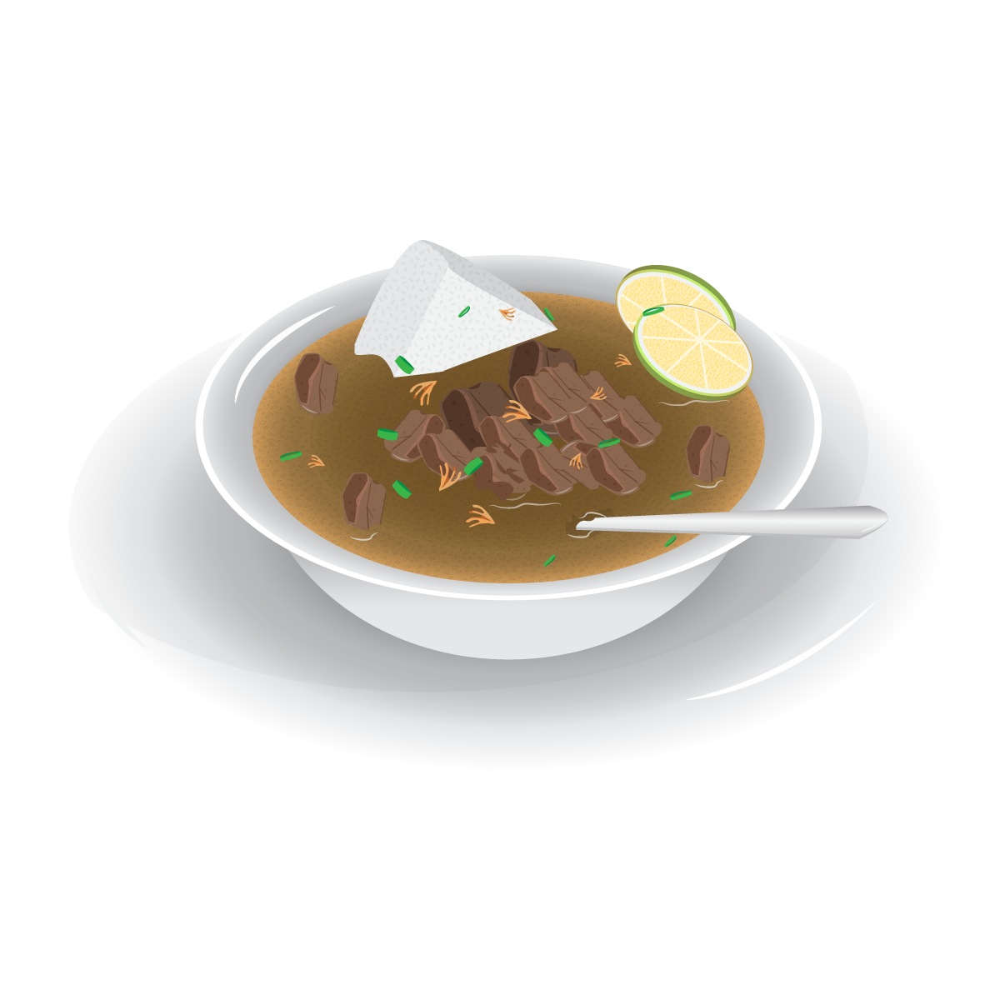

Semua tentang makanan lezat di Makassar
Makassar, ibu kota Provinsi Sulawesi Selatan, merupakan tempat yang kaya akan kuliner khas. Dengan perpaduan cita rasa lezat dan bumbu yang kaya, makanan khas Makassar secara unik mencerminkan budaya dan tradisi masyarakat setempat.
